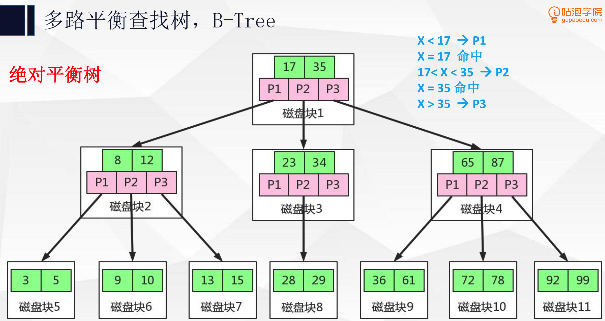
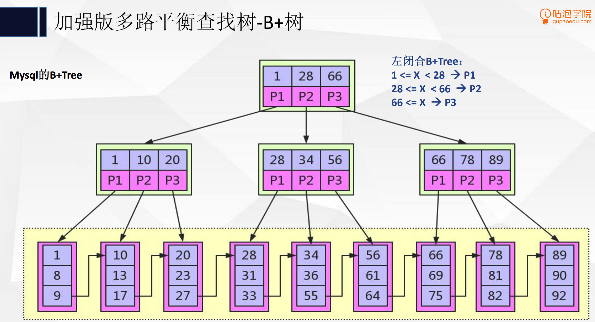
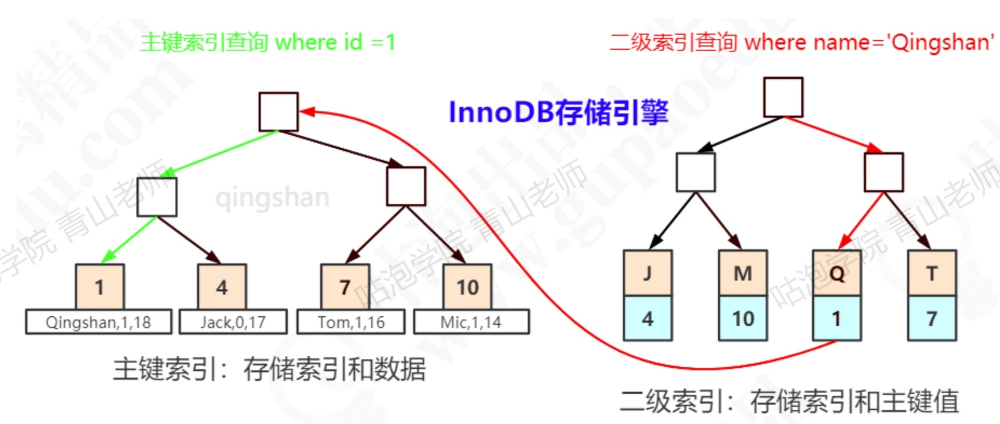

基本概念
当用树的结构来存储索引的时候，访问一个节点就要发生一次磁盘IO，InnoDB操作磁盘的最小的单位是一页，大小是16k，所以一个节点必须设计成16k的大小，存储尽量多的数据，以减少磁盘IO的次数。由此衍生了多路平衡查找树，即B Tree。
B Tree
特点是分叉数比关键字数多1

B+ Tree
特点是分叉数和关键字数相等，只有叶子节点存储数据，且每个叶子节点的最后一个数据会指向下一个叶子节点的第一个数据，形成链表。

B+ Tree和B Tree的区别
B Tree解决的主要问题为存储更多关键字和更多个分叉以减少树的深度，B+ Tree也能做到
B+ Tree扫库扫表能力更强，全表扫描只需遍历叶子节点，而不需要遍历整棵树
B+ Tree非叶子节点不存数据，所以可以存储更多的关键字
排序更强，叶子节点上组成了链表
效率更稳定，数据都在叶子节点，查找的IO次数稳定
为什么不用红黑树
只有两路
深度差达到2倍，不够平衡
哈希索引
数据不是按顺序存储的，不能用于排序
因为要根据键值计算哈希码，所以只支持等值，不支持范围查询
字段重复值很多的时候，会出现大量的哈希冲突
InnoDB中不能显式的创建哈希索引，只有Memory引擎可以
聚簇索引
又称聚集索引，索引键值的顺序和表数据行的物理存储顺序一致，InnoDB里主键索引即聚簇索引，只有聚簇索引的叶子节点存放数据（数据地址），其他索引（称为二级索引）的叶子节点存放的是记录对应的主键，查询数据时先在二级索引树上找到对应主键，再根据对应主键去聚簇索引树上找到数据，这样的操作称为回表。

对于一张表来说：
如果有主键，聚簇索引就是主键
如果没有，聚簇索引是第一个不包含NULL值得唯一索引
如果也没有，InoDB会选择隐藏的6字节的ROWID作为聚簇索引，ROWID会随着行记录的写入而递增。
覆盖索引
如果select的数据正好索引里全有，不需要回表再查，就叫覆盖索引。
索引条件下推（ICP）
全称Index Condition Pushdown，只适用于二级索引，指把过滤数据的操作在存储引擎层完成，而不是让server去做。
索引的注意事项
在where判断、group by、order by、join on的字段上加索引
不是越多越好，占空间，数据变更导致的索引变更耗时
过长的字段建立前缀索引
随机的值不要建索引，比如身份证、UUID
联合索引把选择性好的放前面
字符串查询时要加引号，否则会出现隐式转换，不走索引
not like、函数、+-*/不走索引，!=、<>、not in有些情况不走索引
列的离散度：count(distinct(colume_name)) : count(*)，显然，列的重复值越多，离散度越低，这样的列不适合建索引
联合索引最左匹配
如果有一个a,b,c组成的联合索引，想要走该索引，where中必须要有a，可以有a有b有c，也可以有a和b，也可以只有a，但是不能只有a和c，或者b和c，或者只有a，或只有c